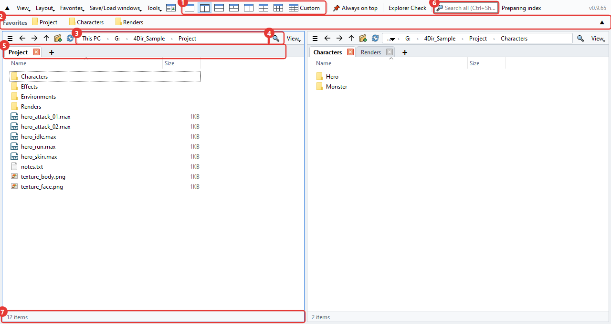
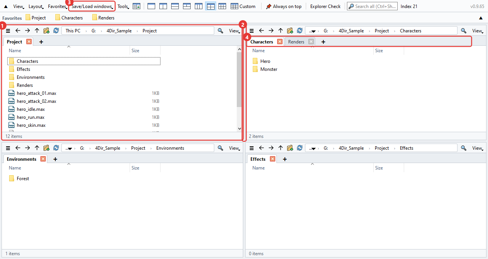
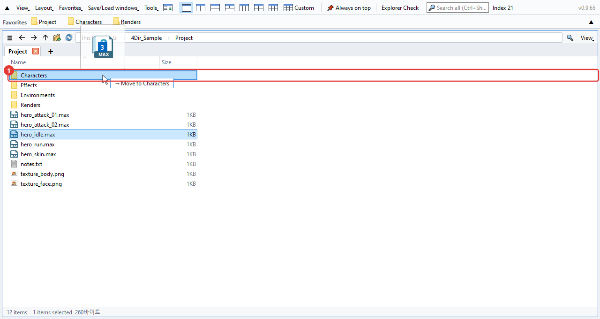
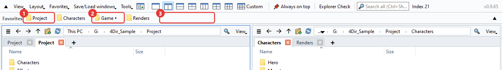
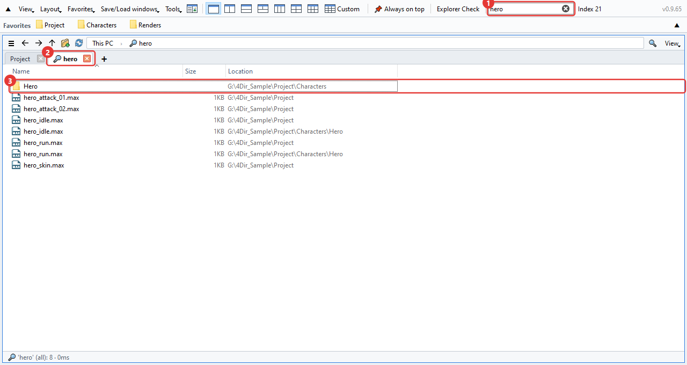
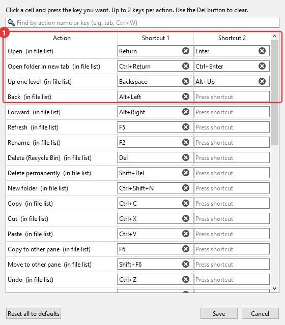
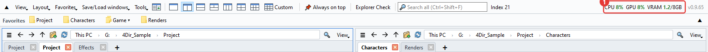
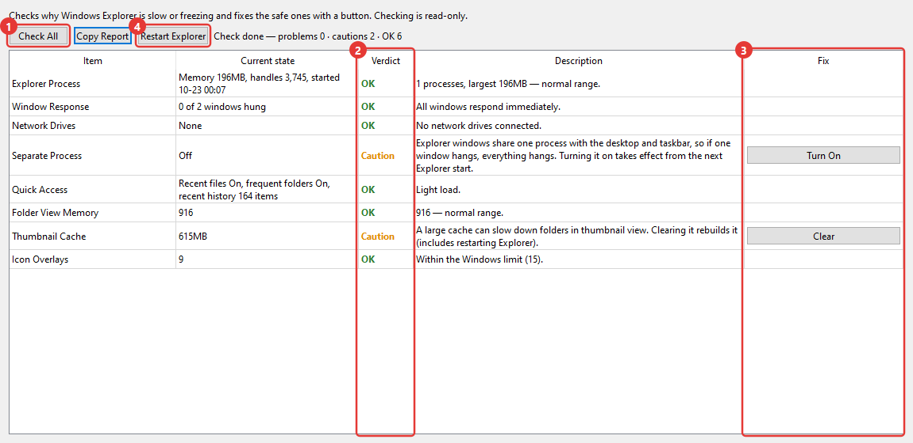

How to use 4Dir
This page walks through the things you'll use most, in roughly the order you'll need them. The red numbers in the pictures match the numbers in the text. Shortcuts are almost the same as in Windows Explorer, so if you've used Explorer you already know about half of this.
The main window
4Dir lets you keep several folders open side by side in one window. From the top down:

- Layout buttons. 1, 2, 3, 4 and 6 panes are one click each. The last one, Custom, lets you pick any number of columns and rows (up to 5×4).
- Favorites bar. Drag a folder you use often onto it and it becomes a button. Right-click a button to rename or remove it.
- Address bar. Click any part of the path to jump to that folder. Click the empty space on the right to type a path instead.
- Filter. Filters the current folder by name. Ctrl+F
- Tabs. Each pane has its own tabs. Open one with + or Ctrl+T, close it with Ctrl+W.
- Search all. Finds files by name across whole drives. More on this under 'Search' below.
- Status bar. Shows the number of items, plus how many you've selected and their size.
Panes and tabs
Think of each pane as a small Explorer. Every pane keeps its own tabs and folders.

- The pane you clicked last gets a blue border. Shortcuts act on that pane.
- Drag the border between panes to resize them.
- In Save/Load windows you can save the current panes and tabs under a name. One per project works well.
- Drag a tab to reorder it or move it to another pane. Drop it outside the window and it opens as a new window. Right-click a tab and you can also open it in Windows Explorer.
Close 4Dir and open it again, and your last panes and tabs are back. If you restart the PC with 4Dir still open, it opens again at your next sign-in (you can turn this off in the Tools menu).
Moving and copying files
Same as in Explorer. While you drag, the target folder is highlighted and a label like '→ Move to …' tells you what's about to happen.

- Target folder. On the same drive it's a move, on another drive it's a copy. Hold Ctrl when you drop to copy, Shift to move.
With more than one pane you don't need to drag at all. Select the files and press F6 to copy them to the other pane, or Shift+F6 to move them.
Made a mistake? Ctrl+Z undoes renames, new folders, moves, copies and deletes to the Recycle Bin, one step at a time.
While renaming with F2, press ↓ to go straight on to the next file. Select several files and press F2 to open the Batch rename window.
The right-click menu is the normal Windows menu, so your archive tool and TortoiseSVN show up there just like in Explorer.
Favorites
Pin folders you use often as buttons on the bar at the top. It starts empty and only shows what you add yourself (it's separate from Quick access in Windows Explorer).

- Favorite button. Click it to open that folder in the current pane. Right-click for Open in new tab, Rename and Delete. Drop files on a button to move or copy them into that folder.
- Group button (▾). Several favorites gathered under one button. Click it to see what's inside. Drop a folder on the middle of a group button to add it to that group.
- Drop a folder on an empty spot or between buttons and a new button appears right there. Drag buttons to change their order. Ctrl+D adds the folder you're in.
If there's a lot to tidy up, open Favorites → Organize favorites. Deleting several at once, reordering, renaming, making groups and finding folders that no longer exist are all in one window. Nothing changes until you press Confirm.
If the buttons don't fit on one line, click ▼ at the right end of the bar. It opens up into several lines so you can see them all (▲ takes it back to one line).
To bring over the folders you pinned in Windows Explorer, use Favorites → Import Windows Explorer Quick access. Ones you already have are skipped.
Search
Type in the search box at the top and results show up right away. The first time 4Dir runs it builds a list of the file names on your drives, and after that it only follows the changes, so it stays fast.

- Search box. With several words you get names that contain all of them. Wildcards like
*.maxwork too. Ctrl+Shift+F - Results open in a tab with a magnifier icon.
- The 'Location' column is the folder the file is in. Double-click to open it, or right-click → Open file location to go to that folder.
Pick which drives to search in Tools → Search scope. Network drives are off at first.
If the list isn't ready yet, or the folder is outside the search scope, the arrow button next to the filter box scans everything under the current folder.
If you use SVN
If your working folder is under SVN, files and folders get status marks. If TortoiseSVN is installed, they're the same icons you see in Explorer.

- Green check: no changes. For a folder, everything inside is taken into account.
- Red exclamation mark: modified. On a folder it means something inside has changes that aren't committed.
- Blue plus: to be added (not committed yet).
- Gray question mark: not under version control.
Buttons on the favorites bar get the same marks, so you can spot uncommitted folders right at the top.
Large working copies take a few seconds the first time. Meanwhile the status bar shows 'Checking SVN'. If you don't need the marks, turn off View → Show → Show SVN status.
Changing shortcuts
In Tools → Keyboard shortcuts you pick the keys for each command. Each command can have up to two keys.

- Click a box and press the key you want, and it changes right away. If the key is already taken, you'll be told.
The ones worth knowing: Ctrl+T new tab, Ctrl+W close tab, Ctrl+N new window, Ctrl+L address bar, Ctrl+Shift+C copy path, Alt+Enter properties.
CPU and GPU usage
This is there so you can see how busy the PC is while rendering in 3ds Max or playing a game. The numbers show on the right side of the top bar.

- CPU: usage of the whole PC. GPU: graphics card usage. VRAM: graphics card memory used/total (GB). They turn orange above 60% and red above 85%. They update every 1.5 seconds, and if you hover over them you'll see the graphics card name.
GPU and VRAM only show on NVIDIA cards. With other cards you only see CPU.
System memory (RAM) isn't shown. If you need it, look in Task Manager (Ctrl+Shift+Esc).
To turn it off: View → Show CPU·GPU usage. Updates stop by themselves when the window is minimized. In a narrow window it moves into » at the end of the menu bar.
Explorer Check
A tool for when Windows Explorer keeps freezing or gets slow. Open it with Explorer Check in the top bar or from the Tools menu. It starts checking as soon as it opens, and the check only reads things, it doesn't change anything.

- Check All: runs the checks again. It looks at Explorer's memory, window response, network drives, separate process for folder windows, recent items, remembered folder views, the thumbnail cache, the number of overlay icons, recent crash records and more.
- Result: OK / Caution / Problem / Info. The column next to it says why.
- Fix button. Only shown for things that can be fixed. When you click it, it asks once more and tells you what it will change, and it only touches the current user's settings and user folders.
- Restart Explorer: closes Explorer and starts it again when it's stuck. Any open Explorer windows will close.
Copy Report copies the results as text. If you ask about a problem, sending this along makes it much quicker to find the cause.
Other things
- Light/dark and language are in the View menu. A language change takes effect after you restart 4Dir.
- If 4Dir starts acting strange, click Tools → Save log for problem report and send the zip it makes to support@4dir.net. We'll look at the log to find the cause.